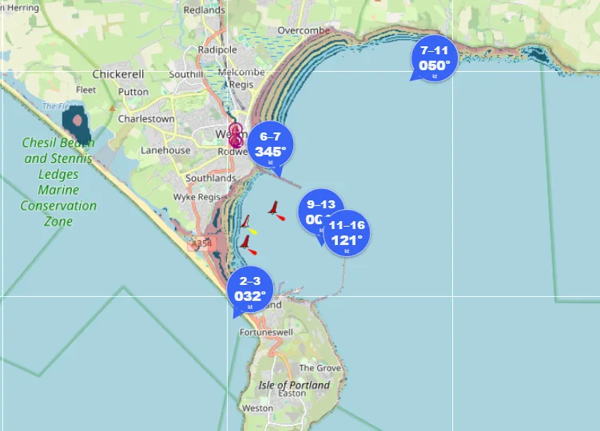

The short version
- Same wind direction, different answer: the harbour and the bay sail like two venues.
- In a north-easterly in the bay, the top left has paid more often than not.
- In a south-westerly the swell decides your technique, tack by tack.
- Arrive the night before: registration and the slipway get busy early.
At a glance: the harbour and the bay
WPNSA sits on Osprey Quay inside Portland Harbour. Most ILCA events race either inside the harbour walls (flat water, bendy breeze) or out in Weymouth Bay (more swell, steadier pressure). Knowing which one you’re in changes almost everything.
Tap the harbour or the bay to zoom in, then pick a wind on the dial. We start on the south-west to north-west slice because it’s the one you’ll get most. The three slices are what the wind has blown over before it reaches you: across Chesil Beach (SW to NW), straight off the land (NW to ENE), or in off the sea and round the Bill (ENE to SW).
Draft The breeze comes across Chesil Beach and Portland before it reaches you, so the harbour is patchy. Pink is lighter: Portland’s high ground throws a wind shadow along the south wall and out past it, and the breeze is soft in under the north shore where it lifts off the land. Green is more breeze: it squeezes along the edge of that shadow, off the WPNSA and Osprey Quay side.
Inner loop: play the left, but don’t hammer it. The right always looks fine, fine, fine… then 200 metres on there’s an extra 10 degrees of left that just never disappears, and slightly less breeze over there too. It feels random enough that, if you didn’t know better, you’d try the right several times before giving up.
Outer loop: it’s just left. Take the gate you round with a right turn (the right-hand mark as you come down the run), which sends you off to the left, pretty much every time, unless you’re building leverage on some pressure, and then you’ve got to get back to the left again.
Watch for the bottom left: it doesn’t always come out. But the top right never comes in.
A harbour-only feature. In a northerly to north-easterly, especially racing down by the middle wall, watch for persistent-shift-style blocks of pressure. Not every day, but often enough. The shifts are long, roughly 20 degrees either way, and the pressure brings the shift and it stays in.
The water’s certainly flatter on the right, so there’s a temptation to go hard right. It rarely works: the breeze drops off the land on the left, so the left is more consistent for pressure. Left is the percentage play, about 60:40, maybe 65:35, but only on the first beat.
Inner loop / first beat: you have no clue on duration. It could be a 30-second, 35-degree swing, or one 15-minute shift that’s the only shift on the beat. The holes are bigger and the pressure less stable, so you can really get caught. Expect one, maybe one and a half, things per beat.
Outer loop / second beat: more of a coin toss. You’re almost directly downwind of the Nothe, with fairly high land on the left and well-mixed air, so it’s normal shifty, pressure-driven sailing: two, three, four things per beat. For us that’s more predictable, because it’s just random, dropping breeze.
Watch for the breeze clocking past the Nothe. Once it’s got any east in it, it’s a bit more persistent again; left of the Nothe it’s random.
On the left there’s a wind bend. Sail into it and it lifts you, but overstand and you’ll pop out the other side too high. See pin 3 on the map.
Not the same in the bay
The same direction out in the bay doesn’t do this. Check which area your race is in before you plan the first beat.
South-east: left is strong. There’s always a little more wind along the wall (you notice it wing-foiling or in a WASZP when you’re struggling to get up on the foil). Hammer against the wall: inexplicably, it comes out about 85:15. It isn’t always a huge gain. You can get up to about ten boat lengths from the wall, and that’s your max gain.
Southerly: occasional, and they should never race you in one in the harbour, but they do. There’s a big dead spot behind the Bill. The wind wraps round either side of it and flicks from one side to the other, so it’s never truly southerly. Pick your poison: decide which side you think will prevail, and don’t go middle.
Wind: what this direction does inside the harbour walls (bends, holes, stronger lanes).
Which side pays and how sure we are.
Technique and watch for.
This is where you get the classic offset swell. It wraps round Portland Bill itself, then round the harbour wall, so it keeps bending further and further round. Where they race the UKLA qualifiers, a west-south-westerly can give full cross swell. The further south the breeze goes in this range, the less cross swell you get. You’re typically bow-on to it on starboard.
In the classic west-south-westerly, the trap is getting too greedy on port. Read the phase of the shift to judge whether you can drop the bow, go low on port and get over some boats. Usually it’s better to save up, save up, save up, then drop the bow. It’s a high-risk move.
| Leg | What to change |
|---|---|
| Upwind, starboard | Shuffle back about 3 inches. Steer less, work the mainsheet through the waves. |
| Upwind, port | Move forward and press against the side. Drive it low through the swell. |
| Downwind | With a cross swell, don’t force port: it’s slow. Stay on starboard for the whole leg. |
Watch for the swell angle changing as you get closer to Portland.
Anything from north-west to north-east is the same in the bay, inner loop or outer: the breeze is dropping down off the land. Compared with the harbour, the sea state changes and you don’t get the persistent blocks.
It’s hard to predict. The land is high above the cliffs and the pressure bounces down, so what you see isn’t what you get: sail to pressure you can see upwind and you’re probably doing the wrong thing. Pressure first, then attack the lift, not sailing through pressure to get to a shift. Be ready to get dunked.
An old venue guide said top left pays about 70:30 in a bay northerly. Top left does seem to pay a little more than the right; from mid-beat down we don’t think there’s anything in it either way. Courses are usually much bigger in the bay too.
Watch for the other side. It can feel like the left is really working, then somebody comes out of the right. Sail your own beat: what’s happening to you isn’t happening everywhere on the course. Head out of the boat, look confident.
Our favourite: east through to south in the bay. It’s a speed day, and now you’ve got the swell. Expect longer-phase oscillations.
Downwind speed is the number one priority. Understand the wave angle and think about how it changes your downwind decisions.
Watch for the tide. On neaps, ignore it. On springs, if the course is set really close to the harbour entrances, think about it.
Waves: how the sea runs into the bay in this direction.
Wind and which side pays.
Technique and watch for.
Notes for this direction.
Wind rose: what it usually does
Long-term wind statistics for the area. Use them to guess what an event in a given month is likely to bring, then check the forecast.
Forecast and live wind
For a forecast we tend to look at the ECMWF and GFS models. The Met Office’s more recent UKV model does work quite well, but we’re still experimenting with it, so bear that in mind. You’ll find these models on most platforms, such as Windguru, windy.app and Windy.com.
The wall over-reads
The live wind readings on the wall typically over-read by about 4 knots, so the conditions can look windier than they are. Knock 4 knots off before you decide on your rig or your layers.
Which station is “the wall” on the Navigator chart (name it so readers can find it)? Is “UKV” the right name for the Met Office model you mean (you wrote UKV2)? Is the last line of the callout (“Knock 4 knots off…”) OK? It’s mine.

Check the Navigator link (navigator.beyondtheshift.co.uk) and whether it should open on Portland.
Fog and cold northerlies
In spring (around April) and autumn (late November) you get a lot of fog rolling in, so be ready for postponements. Cold, blustery northerlies are haphazard: the shifts are all over the place.
Tide and swell
Tide in the bay: on neap tides, ignore it. On spring tides, if you’re racing really close to the harbour entrances, think about it.
Swell is what we really add. In an east to south it’s straightforward: a speed day, and the wave angle drives your downwind. In a south-west to west it wraps round Portland Bill and again round the harbour wall, so a west-south-westerly can give full cross swell on the qualifier course. Pick a wind on the explorer above for the detail.
Inside the harbour the tide is weak.
BTS Race NavigatorPortland tidal model, hour by hourCheck the tide notes.
Launching and ashore
Slipway
Wide slipway straight into the harbour. Busy before the first start: rig early.
Boat park
Allocated by class at most events. Bring a trolley tag with your sail number.
Parking
Pay car park on Osprey Quay. Trailers to the overflow area.
Changing
Changing rooms and showers in the main building. Hot water runs out after racing.
Parents’ guide: the weekend
What an event day looks like from the shore, so you know when you’re needed, when you can grab a coffee, and roughly what the whole trip will cost (calculator further down).
- Arrive and parkThe car park fills fast on the first morning.
- RegistrationUsually the morning of day 1 or the evening before.
- BriefingSailors only. Prime time to sort lunch bags and find the coffee.
- First warning signalBoats leave the slipway about an hour before.
- Back ashoreHelp wash down, then results go up online.
Times are examples. The NoR on each event in our calendar has the real ones.
Beds, food and the best seat in the house
Stay: Portland
RYA Portland House is our number one if you can get it. It’s run by the RYA for RYA members, and it books up fast over weekends and big events, so get in early. In a campervan or motorhome? You can stay on site at WPNSA, with electric hook-up: book through the WPNSA website or reception. There are other places to stay on Portland, but we’d rather not talk about them.
Stay: Weymouth
A lot more options on the Weymouth side: the caravan park, and independent Airbnb and Booking.com places. The nice ones are quite expensive.
Eat
Weymouth town is the place to eat. Breakfast or lunch at Nautico Lounge (good craic). For dinner, the pub restaurants along the seafront and down by the town bridge are the good zone. For a really good Indian: Shalim’s Balti House.
Coffee
Nautico Lounge for the best coffee in Weymouth. Finca is the most London place in town. Caffeine 44, Beehive and Riptide are good too.
Watch
Billy Winters on Portland: grab a coffee and watch the racing. It’s cold in winter, so wrap up.
Work on your laptop
Weymouth Library is actually quite nice (Great George Street; 10–5 Monday to Wednesday and Friday, 10–6 Thursday, 10–4 Saturday, closed Sunday). Salt at Portland Marina is quiet and close to the club. Spinnakers is the usual option. Riptide is too small to work in and Beehive is busy: both are loud.
- Folding chair, flask and a proper coat: the quay is “bracing”.
- Cash or card for the car park.
- Spare kit and a towel for the drive home.
What it’ll actually cost
Knowing the real cost makes a season easier to plan (and easier to explain to whoever does the household budget). Put in your own numbers.
Default prices are examples, not quotes.
Events here this season
Pulled from our season calendar. Tap one to see dates, documents and add it to your calendar.
Finding events here. Read the water before you race it.
Keep reading
We train at WPNSA through the winter. See our coaching or join the WhatsApp group.